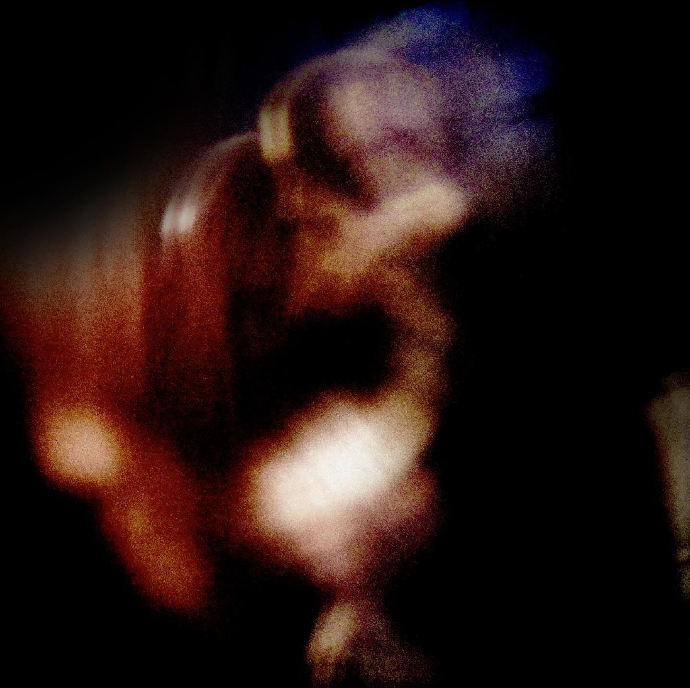
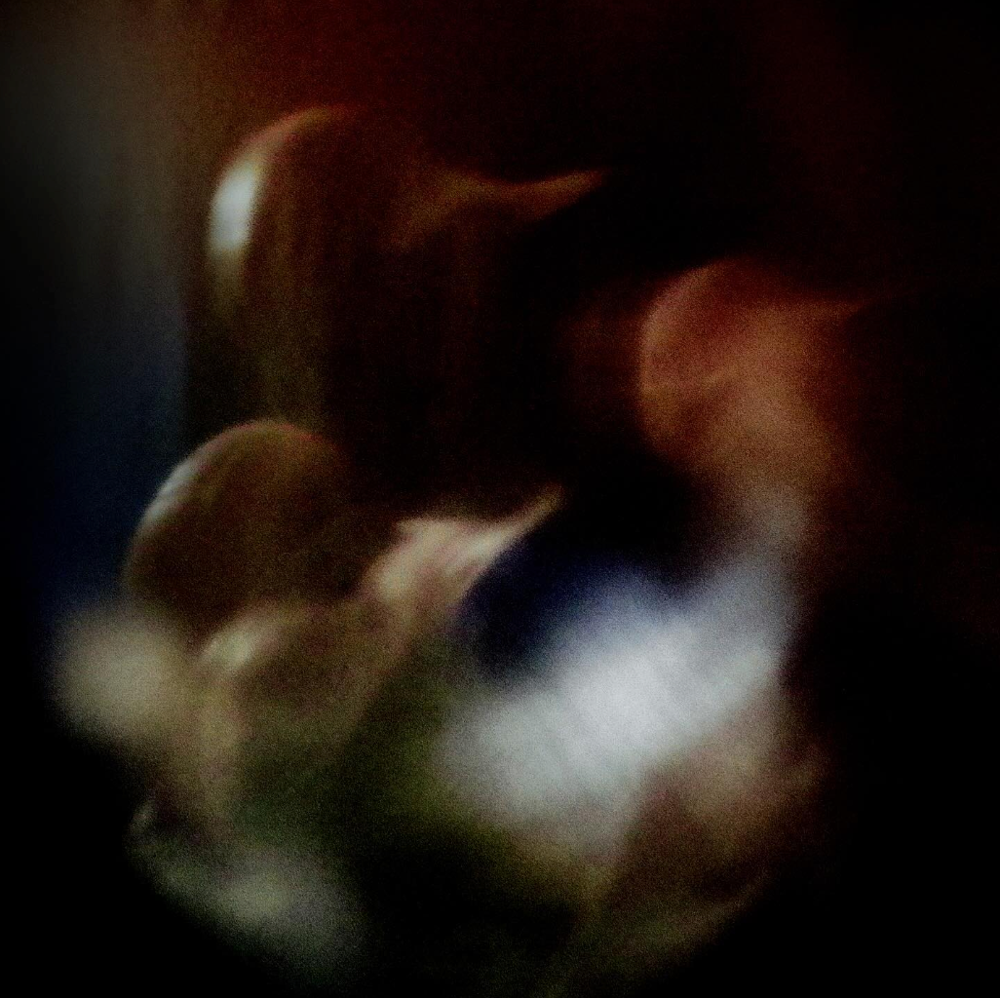
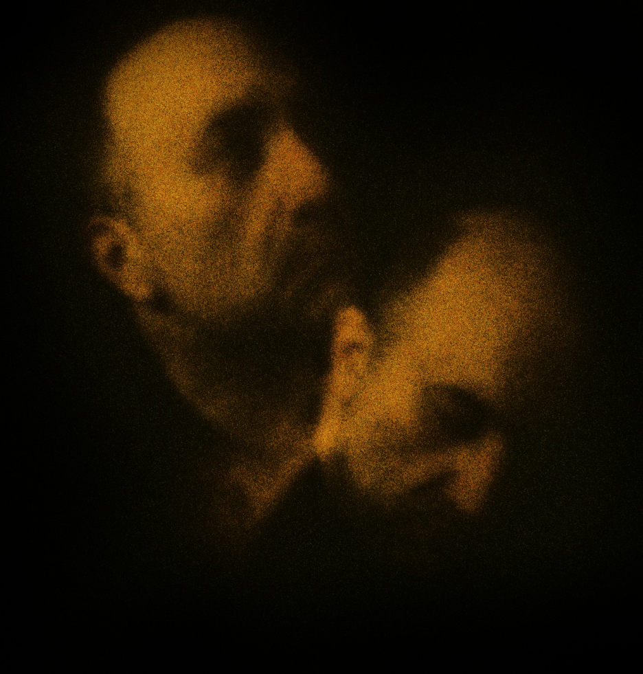

2026 — 10th Annual Center for Contemporary Arts National (CCAN) · view exhibition ↗
Center for Contemporary Arts National (CCAN), Abilene, TX, October 10, 2026

I create work where action, speed of movement, and thought dominate the subject of my artwork. I document dynamic performances using various techniques to create source material for much of my work. The completed work is composed of a narrative that depicts motion in two-dimensional images.
selected work





selected exhibitions
2025 — 9th Annual CCAN
Center for Contemporary Arts National Juried Art Exhibition, Abilene, TX · exhibition ↗ · Abilene Cultural Affairs Council ↗ · CaFÉ listing ↗
Center for Contemporary Arts National Juried Art Exhibition, Abilene, TX · exhibition ↗ · Abilene Cultural Affairs Council ↗ · CaFÉ listing ↗
2025 — Oops! Unfortunately...
A Space Gallery, Brooklyn, NY · view exhibition ↗
A Space Gallery, Brooklyn, NY · view exhibition ↗
2025 — Aperture: Current Approaches to Photography!
Artlink Contemporary Gallery, Fort Wayne, IN · July 31–August 24, 2025
Artlink Contemporary Gallery, Fort Wayne, IN · July 31–August 24, 2025
2025 — ShadowBoxX Gallery
Mirror Mirror · view exhibition ↗
Mirror Mirror · view exhibition ↗
2025 — Ethereal · gallery ↗
Glasgow Gallery of Photography, Glasgow, UK · October 3–31, 2025; two works included
Glasgow Gallery of Photography, Glasgow, UK · October 3–31, 2025; two works included
2025 — Uncanny · exhibition ↗
IU Kokomo Art Gallery, Kokomo, IN · June 4–25, 2025
IU Kokomo Art Gallery, Kokomo, IN · June 4–25, 2025
2025 — Unseen Forces · gallery ↗
T Mari Gallery, Chicago, IL · June 7–22, 2025
T Mari Gallery, Chicago, IL · June 7–22, 2025
2025 — Wild at Heart and Weird on Top For David Lynch
The Lab on Santa Fe, Denver, CO · April 11–June 7, 2025
The Lab on Santa Fe, Denver, CO · April 11–June 7, 2025
2025 — fotofoto Gallery 20th National Show
fotofoto Gallery · March 13–April 5, 2025; juror: Andreas Rentsch
fotofoto Gallery · March 13–April 5, 2025; juror: Andreas Rentsch
2023 — INTERSTATE: Where I-90 Meets I-82 · gallery tour ↗
Sarah Spurgeon Gallery, Central Washington University, Ellensburg, WA
Sarah Spurgeon Gallery, Central Washington University, Ellensburg, WA
2023 — 2023 CCM and ESU Faculty Exhibition
Madelon Powers Gallery, East Stroudsburg University, East Stroudsburg, PA
Madelon Powers Gallery, East Stroudsburg University, East Stroudsburg, PA
2023 — 2023 CCM and ESU Faculty Exhibition
CCM Gallery, County College of Morris, NJ
CCM Gallery, County College of Morris, NJ
2022 — Blackout National Show
Art on 30th / An Art to Market Community, San Diego, CA · October 2022
Art on 30th / An Art to Market Community, San Diego, CA · October 2022
2022 — INTERSTATE: Where I-90 Meets I-82 · gallery tour ↗
Sarah Spurgeon Gallery, Central Washington University, Ellensburg, WA
Sarah Spurgeon Gallery, Central Washington University, Ellensburg, WA
2021 — Lost and Found Show
Core New Art Space, Lakewood, CO
Core New Art Space, Lakewood, CO
2021 — Luminosity: The Cultural Center of Cape Cod Juried Exhibition · exhibition ↗
Cultural Center of Cape Cod, South Yarmouth, MA
Cultural Center of Cape Cod, South Yarmouth, MA
2020 — Cape Fear Studios 10th National 2D Competition and Exhibit
Cape Fear Studios, Fayetteville, NC
Cape Fear Studios, Fayetteville, NC
2020 — Creative Quarterly Website — Issue #57
Online exhibition, Fine Art Category
Online exhibition, Fine Art Category
2020 — Small Work – Big Talent
Las Lagunas Gallery, Laguna Beach, CA
Las Lagunas Gallery, Laguna Beach, CA
2017 — Torpedoes Away
Book of haiku and micro-poetry published by Prolific Press · view book ↗
Book of haiku and micro-poetry published by Prolific Press · view book ↗
2016 — Creative Quarterly Website — Issue #42
Online exhibition, Fine Art Category
Online exhibition, Fine Art Category
2016 — NEXT Up Gallery National Show
NEXT Up Gallery, Denver, CO
NEXT Up Gallery, Denver, CO
2015 — Art by America: A Review of 2-Dimensional Contemporary Art
The Art House, Chicago, IL
The Art House, Chicago, IL
2014 — Crooked Tree Arts Center Juried Fine Arts Exhibition
Crooked Tree Arts Center, Petoskey, MI
Crooked Tree Arts Center, Petoskey, MI
2012 — 2012 International Art Festival
Museum of Russian Art / International Art Festival, Jersey City, NJ
Museum of Russian Art / International Art Festival, Jersey City, NJ
2012 — Eclectic Collection of Short Films at the Pierro Gallery
Pierro Gallery, South Orange, NJ
Pierro Gallery, South Orange, NJ
2001 — Individual Deconstruction
Music Festival, Ypsilanti, MI
Music Festival, Ypsilanti, MI
2000 — Unbecoming · Seattle Times review ↗
Soil Art Gallery, Seattle, WA · Video/Performance Art; group exhibition
Soil Art Gallery, Seattle, WA · Video/Performance Art; group exhibition
press + recognition
2025 — Fine Art Photography Awards
Nominee, Professional Experimental category, for The Fallen · view award record ↗
Nominee, Professional Experimental category, for The Fallen · view award record ↗
2024 — Chromatic Awards
Honorable Mention, Fine Art · view award ↗
Honorable Mention, Fine Art · view award ↗
2023 — Creative Quarterly, Issue #71
Two works published in the Fine Art category · view online gallery ↗ · view issue details ↗
Two works published in the Fine Art category · view online gallery ↗ · view issue details ↗
2020 — The MacGuffin
Volume 36 No. 3
Volume 36 No. 3
2020 — Aleola Journal of Poetry and Art
Issue #4
Issue #4
2001 — The Seattle Times
Sheila Farr, “Rethinking what's beautiful and beastly,” reviewing Unbecoming
Sheila Farr, “Rethinking what's beautiful and beastly,” reviewing Unbecoming
Circa 2000 — Anan Magazine
Feature on Tina Glengary and Evan's Brooklyn apartment, featuring a painting by Nick D'Angelo
Feature on Tina Glengary and Evan's Brooklyn apartment, featuring a painting by Nick D'Angelo
about
Nicholas D’Angelo is an artist and photographer whose work explores action, movement, the body, and psychological states. Working across photography, performance, and digital processes, he creates ethereal images that exist between physical presence and abstraction.
D’Angelo earned a B.A. in Studio Art from Montclair State University and an M.F.A. in Painting and 2D Design from Cranbrook Academy of Art. His work has been exhibited nationally and internationally, including at Sarah Spurgeon Gallery, Soil Art Gallery, T Mari Gallery, IU Kokomo Art Gallery, and Glasgow Gallery of Photography.
Artist Statement
My work explores action, movement, and emotional states through ethereal imagery and blurred motion, creating two-dimensional narratives that exist between perception and abstraction. Using my own body, gestures, and experiences as source material, I construct images that convey both physical energy and psychological tension. The resulting works suggest instability, transformation, and the fluid nature of memory and emotion, often occupying a space between recognition and ambiguity.
I am interested in how emotions can be difficult to define or interpret. Emotional experiences are layered, shifting, and influenced by memory, environment, and perception. Through soft focus, distortion, and motion, my work examines these unstable states and reflects the disorientation that can emerge from the speed and intensity of contemporary life. The blurred image becomes both a visual language and a metaphor for uncertainty, vulnerability, and the fragmentation of experience.
contact
nick@nicksfriends.comdownload CV ↗